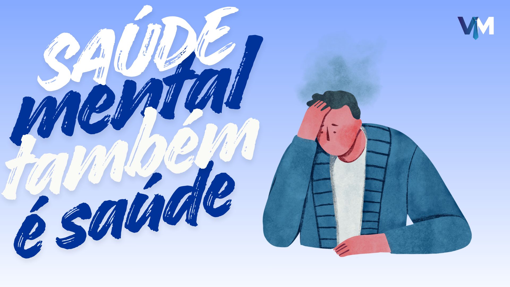
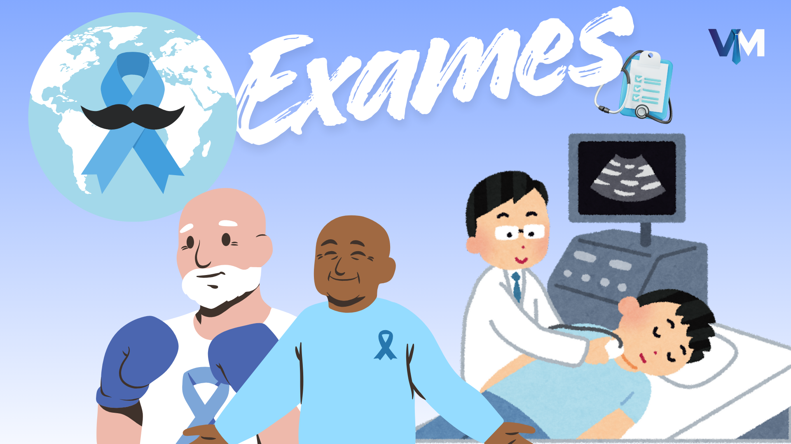
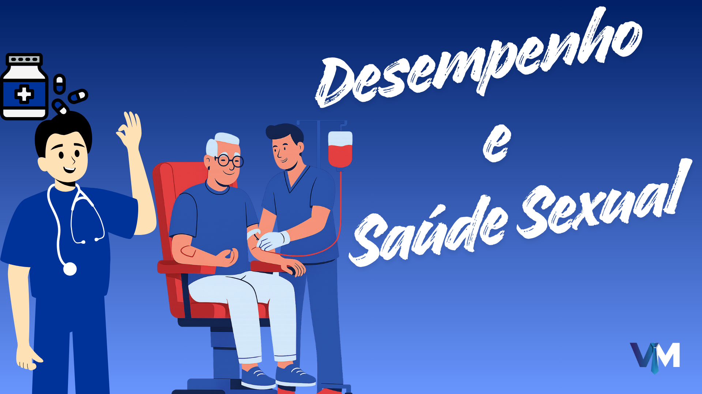
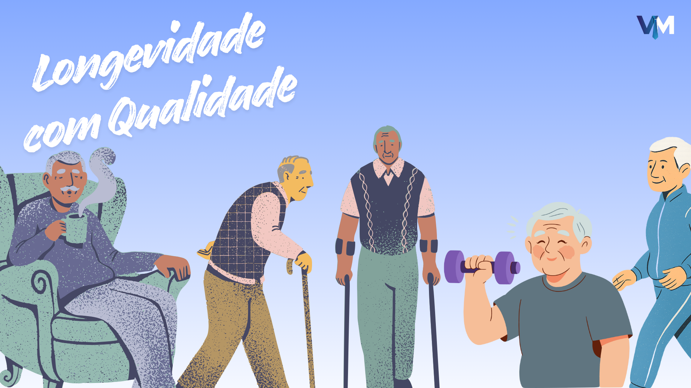

Prevenção é o melhor cuidado 🩺
Fazer exames regulares é essencial pra detectar doenças antes que elas avancem. Hipertensão e diabetes podem ser evitadas com diagnóstico precoce.
Saúde masculina sem tabu. Fale, previna-se, viva.
Saiba Mais
A saúde masculina ainda é cercada de tabus e descuidos. Muitos homens crescem acreditando que buscar
ajuda é sinal de fraqueza, quando na verdade é o contrário: é um ato de coragem.
Manter uma rotina de cuidados, realizar exames preventivos e cuidar do bem-estar mental são passos
essenciais pra uma vida mais equilibrada e feliz.
A VitalMan nasceu pra mudar essa realidade — promovendo informação, conscientização e
apoio.
Fazer exames regulares é essencial pra detectar doenças antes que elas avancem. Hipertensão e diabetes podem ser evitadas com diagnóstico precoce.

O homem moderno precisa aprender a cuidar da mente. Falar sobre sentimentos e buscar terapia não é fraqueza, é parte da vida saudável.
Cuidar do corpo é investir em qualidade de vida. Comer bem e dormir corretamente ajudam no humor, no foco e na prevenção de doenças.

30+: Check-up geral e colesterol.
40+: Próstata e coração.
Sempre: Rotina e vacinação.

Não deixe dúvidas ou preocupações afetarem sua qualidade de vida. Compartilhar e buscar ajuda profissional sobre desempenho e saúde sexual é o primeiro passo para o bem-estar completo.

Cuidar da saúde é o primeiro passo pra uma vida plena. Com mais disposição, você aproveita cada momento ao máximo.
Evite excesso de gorduras e ultraprocessados. Inclua frutas e verduras.
Hidratação constante é vital. Beba pelo menos 2 litros por dia.
Pratique atividade física 3x por semana. Caminhada ou esporte, o importante é mover.
Tenha momentos de lazer. Falar sobre problemas é um ato de coragem.
Cigarro e álcool em excesso prejudicam o coração e o desempenho.
Não espere a dor chegar. Check-ups anuais salvam vidas.
Durma de 7 a 9 horas. O sono recupera o corpo e a mente.
Sexo seguro sempre. Preservativos previnem doenças transmissíveis.